Skattetrekkskonto er en spesiell bankkonto som norske arbeidsgivere må opprette for å administrere trekk av forskuddsskatt fra lønn og andre ytelser til ansatte. Kontoen fungerer som et mellomledd mellom arbeidsgiver og Skatteetaten, og sikrer at alle skattetrekk blir korrekt innbetalt innen lovpålagte frister. Skattetrekkskontoens betydning for regnskapet og likviditetsplanleggingen gjør den til et sentralt element i bedriftens økonomiske drift.
Seksjon 1: Grunnleggende om Skattetrekkskonto
Skattetrekkskonto er påkrevd for alle norske arbeidsgivere som trekker forskuddsskatt fra ansattes lønn. Kontoen er underlagt strenge regelverk og må administreres i henhold til skattelovgivningen for å sikre korrekt regnskapsføring og overholdelse av skattemessige forpliktelser.
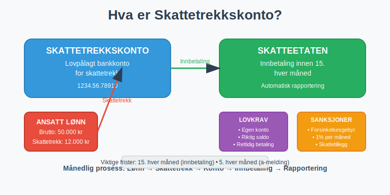
1.1 Juridisk Grunnlag og Krav
Skattetrekkskonto er lovpålagt for virksomheter som:
- Utbetaler lønn til ansatte
- Har trekkplikt for forskuddsskatt
- Foretar arbeidsgiveravgift beregninger
- Administrerer feriepenger med skattetrekk
- Håndterer pensjon og andre ytelser
Hovedkrav til skattetrekkskonto:
| Krav | Beskrivelse | Konsekvens ved brudd |
|---|---|---|
| Egen konto | Skal være separat fra driftskonto | Administrative sanksjoner |
| Riktig saldo | Må dekke alle trekk | Forsinkelsesgebyr |
| Rettidig innbetaling | Innen den 15. hver måned | Renter og gebyr |
| Korrekt rapportering | Skattemelding og a-melding | Skattetillegg |
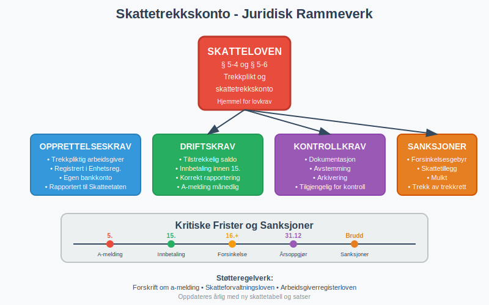
1.2 Forskjell fra Vanlige Bankkontoer
Skattetrekkskonto skiller seg fra ordinære bankkontoer på flere måter:
Unike egenskaper:
- Øremerket formål: Kun for skattetrekk og arbeidsgiveravgift
- Begrenset tilgang: Kan ikke brukes til andre forretningsformål
- Automatisk rapportering: Banken rapporterer bevegelser til skattemyndighetene
- Strenge frister: Innbetalinger må skje innen lovpålagte tidsfrister
- Relasjon til bedriftskonto: Se Hva er Bedriftskonto? for en oversikt over bedriftens generelle kontoer
Regnskapsmessig behandling:
- Bokføres som egen kontantstrøm
- Vises som kortsiktig gjeld i balansen
- Påvirker arbeidskapitalen direkte
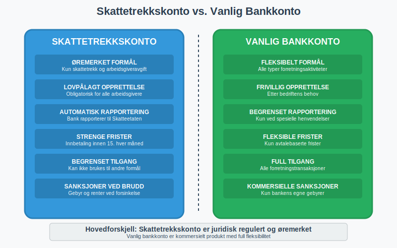
Seksjon 2: Administrasjon og Praktisk Bruk
2.1 Opprettelse og Etablering
Opprettelsesprosess for skattetrekkskonto:
- Kontakt bank: Velg bank som tilbyr skattetrekkskontoer
- Dokumentasjon: Fremlegg organisasjonsbevis og registreringsbevis
- Avtale: Inngå avtale om kontoføring og gebyrstruktur
- Registrering: Registrer kontoen hos Skatteetaten
- Aktivering: Motta kontonummer og tilgangsrettigheter
Nødvendig dokumentasjon:
- Organisasjonsnummer og enhetsregisterutskrift
- Signaturkort for autoriserte personer
- Revisorbekreftelse (ved krav)
- Fullmakter for regnskapsførere
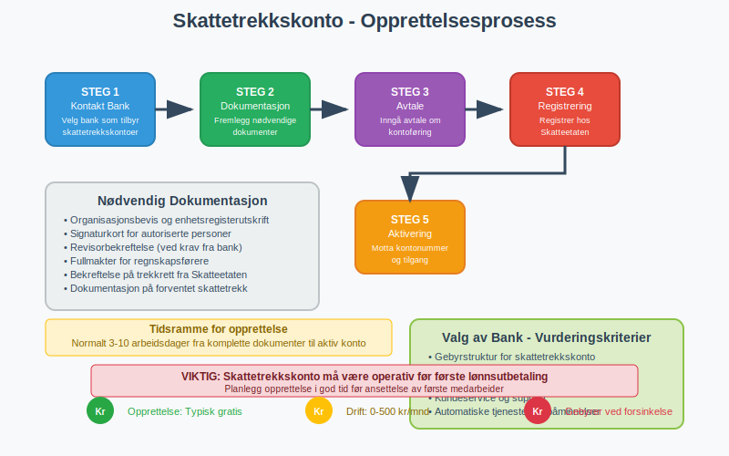
2.2 Daglig Drift og Transaksjoner
Typiske transaksjoner på skattetrekkskonto:
Inngående:
- Overføringer fra driftskonto for skattetrekk
- Korreksjonsinnskudd ved feil
- Renter på innskudd (sjeldent)
Utgående:
- Månedlige innbetalinger til Skatteetaten
- Arbeidsgiveravgift
- Eventuelle korreksjoner og tilbakebetalinger
Månedlig syklus:
Lønnskjøring → Beregn skattetrekk → Overfør til skattetrekkskonto →
Innbetaling til Skatteetaten (innen 15.) → Rapportering i a-melding
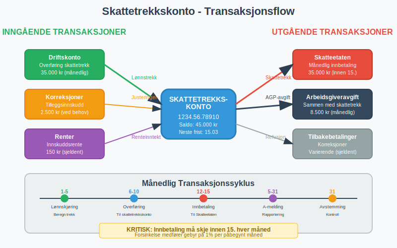
2.3 Regnskapsføring og Bokføring
Regnskapsmessig behandling av skattetrekkskonto:
Skattetrekksbeløpet beregnes ved hjelp av tabelltrekk basert på den ansattes skattekort og Skatteetatens offisielle tabeller.
Ved lønnstrekk:
Dr. Lønnskostnad 100.000
Kr. Skattetrekk skyldig 20.000
Kr. Bankutbetaling 80.000
Ved overføring til skattetrekkskonto:
Dr. Skattetrekk skyldig 20.000
Kr. Skattetrekkskonto 20.000
Ved innbetaling til Skatteetaten:
Dr. Skattetrekkskonto 20.000
Kr. Bank 20.000
Balanseoppstilling påvirkning:
- Omløpsmidler: Konto 1950 - Bankinnskudd for skattetrekk som egen bankinnskuddskonto for forskuddstrekk
- Kortsiktig gjeld: Skyldig skattetrekk før overføring
- Likviditet: Påvirker arbeidskapitalen negativt
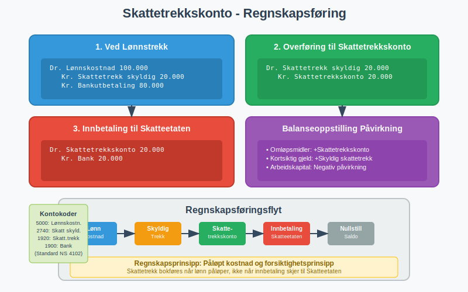
Seksjon 3: Compliance og Risikohåndtering
3.1 Lovkrav og Frister
Kritiske frister for skattetrekkskonto:
| Frist | Aktivitet | Konsekvens ved forsinkelse |
|---|---|---|
| 15. hver måned | Innbetaling skattetrekk | Forsinkelsesgebyr 1% per måned |
| 5. hver måned | A-melding | Mulkt kr 1.000-5.000 |
| Årsskiftet | Årsoppgjør | Skattetillegg |
| Ved oppsigelse | Sluttoppgjør | Inndragning av trekkrett |
Sanksjoner ved brudd:
- Forsinkelsesgebyr: 1% per påbegynt måned
- Renter: Årets rentesats + 6%
- Skattetillegg: 20% av for lite betalt skattetrekk
- Administrative sanksjoner: Inndragning av trekkrett
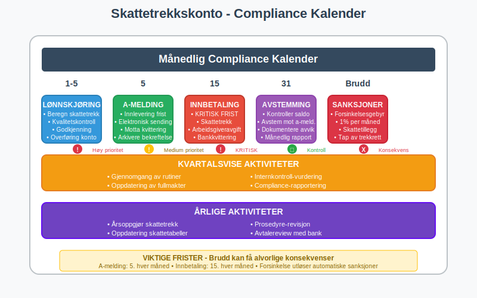
3.2 Risikofaktorer og Forebygging
Hovedrisiker ved skattetrekkskonto:
Likviditetsrisiko:
- Utilstrekkelige midler på kontoen
- Feil i kontantstrømplanlegging
- Uventede korreksjoner eller tilbakebetalinger
Operasjonell risiko:
- Manglende internkontroll
- Feil i beregninger eller overføringer
- Tekniske problemer med banksystemer
Compliance-risiko:
- Forsinket innbetaling
- Feil rapportering i skattemeldingen
- Manglende dokumentasjon
Forebyggende tiltak:
- Automatisering: Elektroniske overføringer og påminnelser
- Dobbel kontroll: Revisjonsprosedyrer for alle transaksjoner
- Reservefond: Buffer for uventede hendelser
- Regelmessig avstemming: Månedlig kontroll mot a-melding
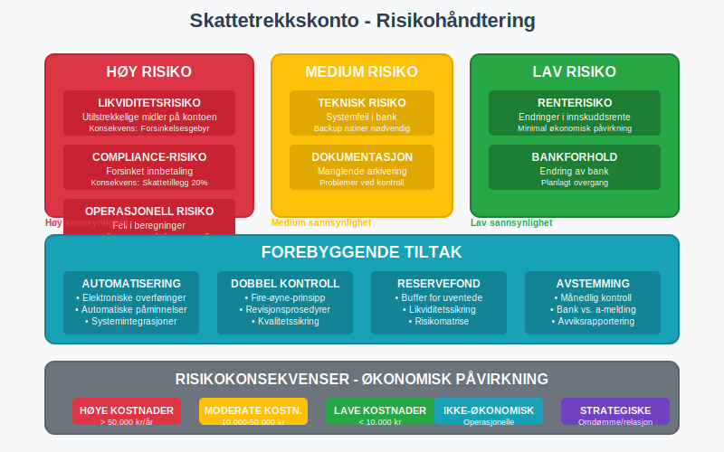
Seksjon 4: Digital Administrasjon og Modernisering
4.1 Teknologiske Løsninger
Digitale verktøy for skattetrekkskonto:
Lønns- og personalsystemer:
- Automatisk beregning av skattetrekk
- Integrert rapportering til a-melding
- Kvalitetssikring av beregninger
Bank- og regnskapssystemer:
- Automatiske overføringer til skattetrekkskonto
- Elektronisk avstemming
- Integrert rapportering og analyse
API-integrasjoner:
- Skatteetaten: Direkte rapportering via a-melding API
- Bank: Sanntids kontoinformasjon og transaksjoner
- Regnskap: Automatisk bokføring og rapportering
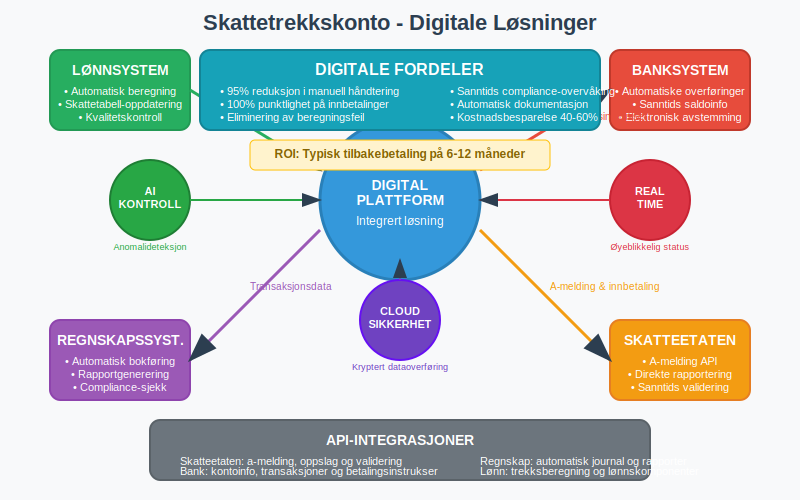
4.2 Automatisering og Prosessoptimalisering
Optimaliserte prosesser:
Månedlig syklus:
- Automatisk beregning: Lønnsystem beregner skattetrekk
- Kvalitetskontroll: System validerer beregninger mot tabeller
- Overføring: Automatisk til skattetrekkskonto på forhåndsdefinert dato
- Rapportering: Automatisk a-melding sendes til Skatteetaten
- Avstemming: System avstemmer mot bankutskrift
Nøkkelytelsesmål (KPI):
- Punktlighet: 100% rettidige innbetalinger
- Nøyaktighet: 99%+ korrekte beregninger
- Effektivitet: Redusert manuell håndtering
- Compliance: Null sanksjoner eller gebyrer
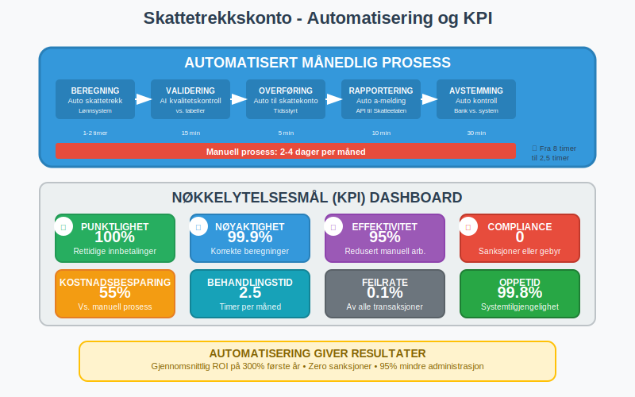
Seksjon 5: Spesielle Situasjoner og Utfordringer
5.1 Sesongvariasjoner og Feriepenger
Feriepenger skaper særlige utfordringer for skattetrekkskonto:
Opptjening vs. utbetaling:
- Feriepenger opptjenes løpende
- Utbetales typisk i juni
- Skattetrekk følger utbetalingstidspunkt
- Viktig: Sykepenger fra NAV gir ikke feriepengeoppbokking
Regnskapsføring feriepenger:
Ved opptjening (måned for måned):
Dr. Lønnskostnad 8.333
Kr. Feriepenger skyldig 8.333
Ved utbetaling feriepenger (juni):
Dr. Feriepenger skyldig 100.000
Kr. Skattetrekk skyldig 20.000
Kr. Bankutbetaling 80.000
Likviditetsplanlegging:
- Betydelig økning i skattetrekkskonto i juni
- Behov for ekstra arbeidskapital
- Planlegging av kontantstrøm på forhånd
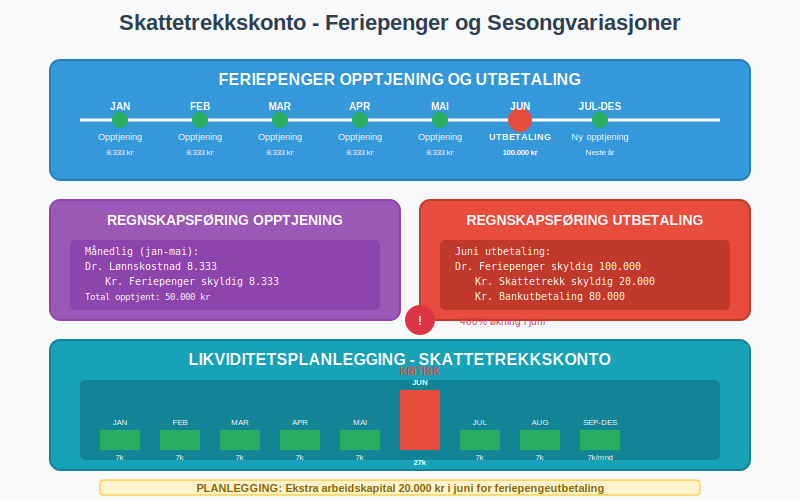
5.2 Oppstart og Nedleggelse av Virksomhet
Ved oppstart av virksomhet:
Etablering av trekkrett:
- Registrering i Enhetsregisteret
- Søknad om trekkrett til Skatteetaten
- Opprettelse av skattetrekkskonto
- Implementering av lønnsrutiner
Ved nedleggelse:
- Sluttoppgjør for alle ansatte
- Endelig innbetaling til skattetrekkskonto
- Avslutning av trekkrett
- Lukking av skattetrekkskonto
Overgangsperioder:
- Virksomhetsoverdragelse
- Fusjon og fisjon
- Endring av organisasjonsform
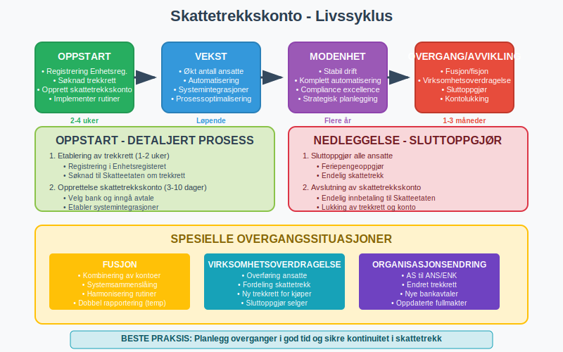
Seksjon 6: Beste Praksis og Anbefalinger
6.1 Etablering av Rutiner
Månedlige rutiner:
| Dag | Aktivitet | Ansvarlig | Kontrollpunkt |
|---|---|---|---|
| 1.-5. | Lønnskjøring | Lønnsansvarlig | Kvalitetskontroll beregninger |
| 6.-10. | Overføring til skattetrekkskonto | Regnskapsansvarlig | Bankavstemming |
| 12.-15. | Innbetaling til Skatteetaten | Regnskapsansvarlig | Kvittering fra bank |
| 15.-30. | A-melding innlevering | Lønns-/regnskapsansvarlig | Statusrapport |
Kvartalsvise oppgaver:
- Gjennomgang av rutiner og prosedyrer
- Avstemming mot kvartalsrapporter
- Oppdatering av fullmakter og tilganger
- Internkontroll og compliance-vurdering
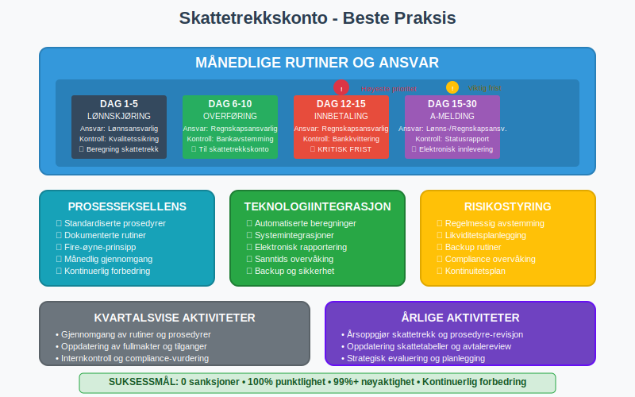
6.2 Framtidsperspektiver
Utviklingstrender:
Teknologisk utvikling:
- Økt automatisering av skattetrekksberegninger
- Sanntids rapportering til skattemyndighetene
- AI-basert kvalitetssikring og anomalideteksjon
- Integrerte ESG-rapportering systemer
Regulatoriske endringer:
- Strengere krav til digital rapportering
- Harmonisering med EU-regelverk
- Fokus på bærekraft og ESG
- Økt bruk av skattefradrag for veldedighet
Strategiske anbefalinger:
- Digitalisering: Invester i moderne lønns- og regnskapssystemer
- Kompetanse: Sikre oppdatert kunnskap om skattelovgivning
- Risikostyring: Implementer robuste internkontrollrutiner
- Samarbeid: Etabler gode relasjoner med banker og rådgivere
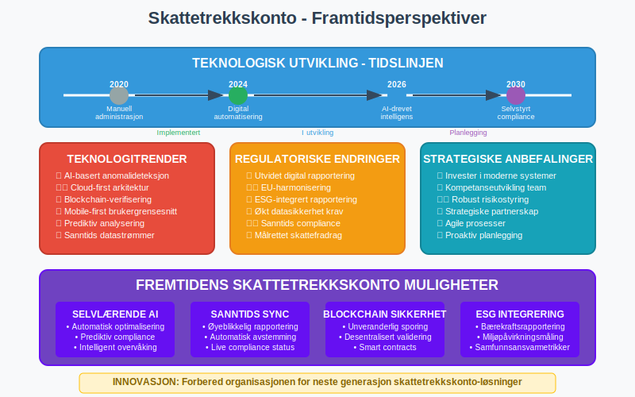
Konklusjon
Skattetrekkskonto er et kritisk element i norske bedrifters regnskaps- og skatteadministrasjon. Korrekt administrasjon krever grundig forståelse av regelverket, etablering av robuste rutiner og bruk av moderne teknologiske løsninger. Ved å følge beste praksis for regnskapsføring, compliance og risikohåndtering kan bedrifter sikre lovlig og effektiv håndtering av skattetrekk.
Framtidens utvikling mot økt digitalisering og automatisering vil gjøre korrekt implementering av skattetrekkskonto-rutiner enda viktigere for bedriftens økonomiske stabilitet og likviditet.